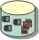

Artifacts >
Artifacts >
 Configuration & Change Management Artifact Set >
Project Repository
Configuration & Change Management Artifact Set >
Project Repository
Artifacts >
Configuration & Change Management Artifact Set >
Project Repository
Artifact:
| ||||||||||||
 Project Repository |
The project
repository stores all versions of project files and directories. It also stores
all the derived data and meta data associated with the files and
directories.
|
| UML representation: | Package, stereotyped as <<project repository>> |
| Role: | Configuration Manager |
| Input to Activities: | Output from Activities: |
The project repository stores all the files and directories that are managed by the project's CM Tool. The project repository is a global resource that will need to be accessed by most project team "clients".
Depending on the size of a project there could be multiple project repositories, and each project repository could contain tens of thousands of files and directories. The number of files in any given project repository will depend on the size of the machine on which the repository server is running, and the number of users expected to concurrently access data. The repository server handles read / write traffic to the project repository.
The project repository can be a central point of failure for all assets, and therefore needs to be reliable, fault tolerant, scalable to accommodate mode data and have high performance so as not to impede product development.
The key hardware considerations (in order of priority) for the project repository are the following:
Memory is one of the cheapest ways to improve the performance of a CM Tool. A rule of thumb for how much main memory is required in the server machine is to add all the database space used by the project repository, and divide by two. For example, 1MB of main memory should be sufficient to allow for caching and background data writing for 2MB of database space. The assumption is that half of the data in the project repository will be actively accessed at any given time.
Server machines should have a minimum of 256MB. On the client side, each developer's machine should have a minimum of 128MB of main memory.
The second most likely performance bottleneck in the CM environment is the speed at which the data can be written to disk. Read/write intensive operations are check-in, check-out and baseline creation. It is a good idea to have a dedicated controller and channel per disk.
Since the CM tool is usually a distributed application, adequate network capacity and reliability are required for good performance. The recommendation is to put machines hosting the project repository and views on the same subnet. And if the local area network (LAN) is too saturated as indicated by time outs and poor response, the idea is to increase network capacity or add a subnet for the CM tool hosing machine.
Depending on the size of a project there could be multiple project repositories, and each project repository could contain tens of thousands of files and directories. The number of files in any given project repository will depend on the size of the machine on which the repository server is running, and the number of users expected to concurrently access data. An active read/write code development project repository can hold less elements than a less volatile repository that does not have the same level of user traffic. For a software development project repository expect to hold approximately 3000 to 5000 elements in the repository.
A good rule of thumb is to allow disk space for growth, and have about 50% free space by allocating 2 giga-bytes of storage per project repository.
The project repository should be on a dedicated server. This means the project repository server should not be used for:
The project repository is set up early in the project lifecycle and maintained throughout.
The Configuration Manager is the prime custodian of the project repository. He has to make sure that it is routinely backed-up and archived in accordance with the project's CM policies (Activity: Establish CM Policies).
Tailoring of this artifact should be documented in the Artifact: Configuration Management Plan.
|
Rational Unified
Process
|